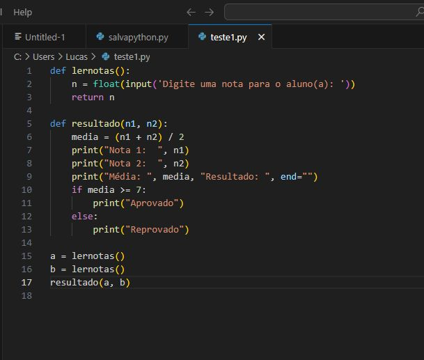

Aqui vemos a primeira função que fiz após ver video aulas sobre Python no Youtube pelo canal do Lan Code, um ótimo canal voltado para Desenvolvedores com uma mistura de desafios, conhecimento e comédia. Nessa função eu pedi para que o usuário enviasse sua nota para o programa, o programa calculava a média, e as condicionais verificavam se a média calculada era superior ao mínimo necessário para ocorrer a aprovação, caso contrario, seria reprovação. Foi uma atividade bem simples, mas bem divertida e me ajudou a puxar um bom aprendizado a respeito de Python.
Clique aqui para retornar à página inicial.